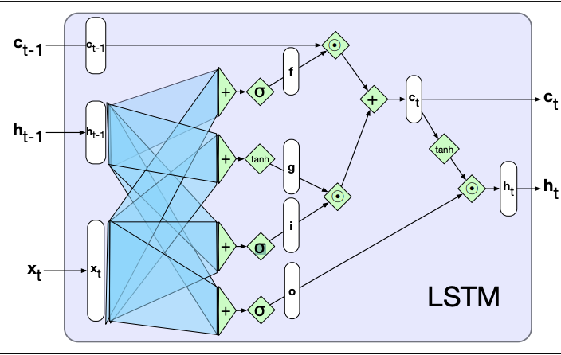
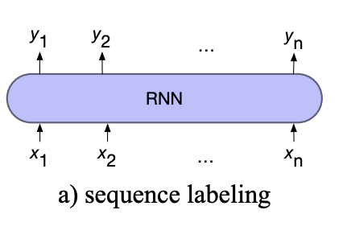
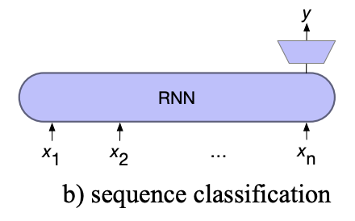

The Little Book of NLP
A brief overview of the content in UoS's COMP3225 Natural Language Processing module.
Note: This book was written for revision purposes and may not be accurate. If there are any inaccuracies suggest an edit!
Generic Concepts
This section covers the concepts that are widely used throughout all areas of NLP
Word Representations
Word representations are methods of creating a numerical representation of a span of text.
Feature Sets
Feature sets are handcrafted lists of features, each represented using a feature vector which are then aggregated (summed, etc.) to create a single vector for the feature set.
Individual features depend on the available information for the task.
For example, common Named Entity Recognition features include:
- Word shapes
- Word features: suffixes, prefixes, capitalisation
- POS tags
- Word lookups (gazetteers)
They are expensive to create as the choice of features are manually chosen. This also makes them difficult to adapt and tune, as it is hard to tell what features are achieving what goals
Embeddings
Vector embeddings are created automatically, learning representations of text based on a set of training data.
Embeddings represent words as a point in a continuous multi-dimensional space
Sparse Embeddings
Sparse embeddings are called as such as many of the entries in the vector will be zero.
There are two methods of creating sparse embeddings
Term Frequency - Inverse Document Frequency (TF-IDF)
TF-IDF uses a term-document matrix, where each cell contains the count of a specific word (rows) in a specific document (columns).
The matrix is weighted by two factors:
- Term frequency: \( \text{TF}(t, d) = \log_{10}(\text{count}(t,d)+1) \)
- Inverse Document Frequency: \( \text{IDF}(t)=\log_{10}(\frac{N}{\text{count}_{docs}(t)}) \)
Which weights each cell by the number of times it appear in the document times the inverse of the number of documents it appears in. Giving the formula for weighting each cell as:
\[ \text{TF-IDF}(t,d)=\text{TF}(t,d) \times \text{IDF}(t) \]
Both factors are used as:
- Term frequency doesn't discriminate
- Inverse document frequency is useless alone, but shows which words are important to certain documents
Positive Pointwise Mutual Information (PPMI)
PPMI uses a term-term matrix, where each cell counts the co-occurrences of a target word (rows) and a context word (columns). Co-occurrences are defined as the number of times the context word appears within a ±N context window around the target word.
PPMI is a measure of how much more two words co-occur than is expected if they were independent.
It is calculated as: \[ \text{PPMI}(w, c) = \text{max}( \log_{2} \frac{P(w, c)}{P(w)P(c)}, 0) \]
Only positive values are used as negative values are unreliable unless the corpus is massive.
The probabilities are calculated: (w, c) is the cell count, (w) is the row count, and (c) is the column count, all divided by the total count
Dense Embeddings
Dense embeddings are much smaller vectors (usually with dimensions in the hundreds), where all values take meaningful real numbers.
Static embeddings learn one fixed embedding for each word.
Word2vec (Skip-gram with negative sampling) is an example algorithm to compute static dense embeddings. In which a self-supervised classifier is trained to classify is two words co-occur, i.e. the context word appears in a ±N window of the target word. The weights are then used as the embeddings for words.
To train the weights:
- The classifier initialises two sets of weights randomly for each word, one for its target representation and the other for its context representation.
- For all words, use the N context words and sample kN random words using weighted unigram frequency (i.e. counts to the power of \(\alpha\), commonly 0.75) to give more weight to rare words
- Adjust the weights to maximise the vector similarity of the context word pairs and minimise the similarity of the negative words
As two embeddings are learnt for each word it is common to either add them together or just use the target word embeddings
Other types of static include:
- fasttext: an extension on word2vec using a sub-word model to better handle unknown words and word sparsity
- GloVe: captures global corpus statistics from ratios of probabilities in a term-term matrix
Contextual embeddings (such as BERT) capture embeddings for each word sense.
Benefits over sparse embeddings
Dense embeddings are better than sparse as:
- They require less weights due to the lower dimensions, which helps with generalisation and avoiding overfitting
- They capture relations between words
Semantic Properties of Dense Embeddings
In word2vec the size of the context window can alter the types of association between vectors:
- Smaller context windows (±2) show first-order co-occurrence (syntagmatic association). Which means the words are typically near each other.
- Larger context windows (±5) show second-order co-occurrence (paradigmatic association). Which means the words share similar neighbours.
Embeddings encode properties such as:
- Relational similarity/meaning: e.g. King - man + women = queen (the parallelogram model)
- Implicit corpus bias
With multiple corpuses (e.g. historical, cultural, document type, ...) analysing the differences in word embeddings can show the change in meaning and associations words may have
Evaluation Metrics
ROUGE
ROUGE is used to evaluate text summarisation.
It evaluates a summary by the proportion on n-grams in the summary that also appear in a reference summary
ROUGE is recall oriented so depended on the quantity of matches not the quality of them.
BLEU
BLEU is used to evaluate machine translations.
It evaluates a generated text against a reference text by comparing the number of n-grams that appear in the generated that also appear in the reference text
BLEU is purely precision based (how much of the translation is good) and ignores recall factors (how much did it translate)
Perplexity
Perplexity is used to evaluate language models, i.e. models which assign a probability distribution for the next word in a sequence.
It measures how good a vocabulary is it predicting a target text. It is computed as the probability of the words in the text appearing in that order, which is then inverted and normalised by the number of words.
Perplexity is given as: \[ Perplexity(w_1...w_N)=\sqrt[N]{\frac{1}{P(w_1w_2...w_N)}} \]
Generalising to a bigram model gives: \[ Perplexity(w_1...w_N)=\sqrt[N]{ \prod_{i=1}^{N} \frac {1} {P(w_i \vert w_{i-1})} } \]
The probability of a sequence of words using the Markov assumption (bigram model) is:
\[ P(w_{1:n}) = P(w_1)P(w_2 \vert w_1) \dots P(w_n \vert w_{n-1}) \]
Where there is a start if sentence marker:
\[ P(w_{1:n}) = P(w_1| \lt s \gt)P(w_2 \vert w_1) \dots P(w_n \vert w_{n-1}) \]
Precision, Recall, and F1
Precision, Recall, and F1 are used to evaluate classification tasks.
Precision is defined as the proportion of predicted items that are actually correct compared to all items predicted to be correct: \[ precision=\frac{TP}{TP+FP} \]
Recall is defined as the proportion of predicted items that are actually correct compared to the actual set of correct items \[ recall=\frac{TP}{TP+FN} \]
There is a trade off between these two metrics so F1 score is used instead, which incorporates both metrics. \[ F1=\frac{2 \times precision \times recall}{precision+recall} \]
To adapt these to multi-class problems there are two methods:
- macro-averaging: compute the performance for each class individually, then average over the classes
- micro-averaging: pool the decisions for each class into a single binary confusion matrix, then compute precision and recall
Cross Entropy Loss
Cross entropy loss (negative log likelihood loss) measures how close an estimated output \(\hat{\ y} \) is to the correct output \( y \). We aim to minimise the negative log probability of the true \( y \) labels in the training data. Cross entropy loss is given as:
\[ L_{CE}(\hat{\ y}, y) = -( y \log \hat{\ y} + (1 - y) \log (1 - \hat{\ y}) )\]
When the classifier is binary, correct output being 0 or 1, the cross entropy loss is just \(\ -\log\hat{\ y} \)
For multi-class output Categorical Cross Entropy Loss is given:
\[ L_{CCE}(\hat{\ y},y) = -[\sum_{i=1}^{N} y_i * log(\hat{y_i})] \]
To find the loss of a sequence of outputs, we average the cross entropy loss over all the output states:
\[ L = \frac{1}{T}\sum^T_{i=1}L_{CCE}(\hat{y_i}, y_i) \]
Vector Similarity
Measuring the similarity of two vectors is an important topic as many NLP applications use vector representations of words, i.e. embeddings
A simple method of measuring how similar two vectors are is the dot product:
\[ v \cdot w = \sum^N_{i=1} v_iw_i \]
However, this is method is biased towards longer vectors. Cosine similarity or the normalised dot product is commonly used instead:
\[ \text{cosine}(\theta) = \frac{a \cdot b}{|a||b|} \]
Where vectors are pre-normalised these metrics are interchangeable.
Classical NLP
This section covers areas of NLP that exist outside of deep neural networks.
N-Grams
A language model is one that assigns a probability to each possible next word in a sequence.
The probability of a sequence of words is the joint probability of each word given all previous words.
\[ P(w_{1:n}) = P(w_1)P(w_2 \vert w_1)P(w_3 \vert w_{1:2})...P(w_n \vert w_{1:n-1}) \]
As there is no way to compute the probability of a word given a long sequence of preceding words, n-grams use a generalised form of the Markov assumption (the current state only depends on the previous, i.e. the bigram) where the current state depends on the previous n-1 states.
For a bigram model:
\[ P(w_{1:n}) = P(w_1)P(w_2 \vert w_1) \dots P(w_n \vert w_{n-1}) \]
Where there is a start if sentence marker:
\[ P(w_{1:n}) = P(w_1| \lt s \gt)P(w_2 \vert w_1) \dots P(w_n \vert w_{n-1}) \]
The probability (maximum likelihood estimation, MLE) for an n-gram is given by the count of the n-gram normalised by the count of the preceding (n-1)-gram:
\[ P(w_n | w_{n-N+1:n-1}) = \frac{C(w_{n-N+1:n-1}w_n)}{C(w_{n-N+1:n-1})} \]
Where \( N \) is the size of the n-gram
To evaluate an n-gram model perplexity is used.
Dealing with Unknown Words
It is possible that words may appear in the test set that where not in the training set.
One method of dealing with this is to enforce a close vocabulary, where all test words need to be known.
However, in most situations language models need to be able to handle unknown words, also known as out of vocabulary (OOV) words. To do this a new pseudo-word token <UNK> is added to the vocabulary, making it an open vocabulary
There are two common ways to create an open vocabulary:
- Choose a fixed vocabulary and replace all words in the training set with the <UNK> that do not appear in the fixed vocabulary
- Replace all words in the training set that have less than a certain frequency or are not in the most frequent X words with <UNK>
This pseudo-word is then estimated like any other word. Unknown words in the test set are then treated as the <UNK> token
Dealing with Sparse Data
Another issue that occurs in n-gram models is the sparsity of n-grams, i.e. known words appearing in a new sequence or context.
Laplace Smoothing
One method of solving this is shifting some of the probability mass from probable words to words that appear less. This is known as Laplace smoothing where \( k \) is added to all all word counts, this is commonly known as add-1 or add-\(k\) smoothing.
\[ P_{\text{Laplace}}(w_n \vert w_{n-N+1:n-1}) = \frac{C(w_{n-N+1:n-1}w_n)+k}{C(w_{n-N+1:n-1})+kV} \]
Note: \( kV \) has been added to the denominator to take into account the extra counts across the whole vocabulary
Backoff and Interpolation
Another method of dealing with sparse n-grams is to take into account the probability of the lower-order n-grams. There are two methods of doing this.
Backoff is one method, which uses the highest-order n-gram that has been seen.
In order for backoff to give a valid probability distribution, a function \( \alpha \) is used to distribute the mass to the lower-order n-grams. This is known as Backoff with discounting or Katz Backoff
Interpolation is another method which mixes the probabilities of the n-gram and its lower-order variations. This is done by adding the probability of each n-gram together, each weighted by some factor \( \lambda_i \). The sum of all weights needs to add to 1 to ensure the probability distribution remains valid.
\[ \hat{P}(w_n | w_{n-2:n-1}) = \lambda_1P(w_n) + \lambda_2P(w_n|w_{n-1}) + \lambda_3P(w_n|w_{n-2:n-1}) \]
It is possible to also compute weights depending on the context sequences.
These weights are trained using a held-out corpus, ensuring it does not overfit to the actual training data.
Other forms of dealing with unknown contexts are:
- Stupid backoff
- Kesner-Ney Smoothing
Text Processing
Regex
Regex is a language used to find text that matches a certain pattern.
Some useful pattern notations:
- The common operator with characters is concatenation
- Brackets match a single character from a range of characters, e.g. [a-zA-Z] or [abcdef]
- Carat at the start of brackets indicates "not" in range, e.g. [^a] is not "a"
- A ? indicates the preceding symbol is optional
- A * indicates 0 or more of the preceding symbol, + is 1 or more
- {x, X} indicates a range between x and X of the preceding characters, variations of {x}, {x,} and {,X} exist
- A . indicates any character
- ^ and $ indicate the start and end of lines respectively
- \b is a word boundary
- The | indicates the "or" operator
- \s (\S) indicate (not) whitespace characters
- \w (\W) indicate (not) word characters
- \d (\D) indicate (not) digit characters
- () indicate a capture group, where \1 .. \n can be used to reference the specific capture group match.
- (?:) indicates a non-capturing group, useful with the | operator.
- (?=) (?!) indicate positive and negative lookahead (non-matching)
- (?<=) (?<!) indicate positive and negative lookbehind (non-matching)
Text Processing
Given a text, we may want to separate the text into individual words. This process is known as word tokenisation, other forms exist which may tokenise the text into sub-word pieces or spans of words.
Byte Pair Encoding is an automated method of tokenising a text into sub-words. It works as follows:
- Start with a set of all characters, the vocabulary.
- Split the text into characters
- Find the most frequent concatenation of two tokens from the vocabulary present within words in the text, merge them, and add the merged token into the vocabulary
- repeat until \( k \) merges have been made.
It may be useful to normalise words into a single form, of which there are two methods:
- Lemmas are the root (dictionary) form of words, e.g. sing is the lemma of sing, sang, and sung
- Stems are the main body of the word with modifying suffixes removed
String Similarity
Many NLP applications may need to know how similar two strings are.
To do this minimum edit distance is used, which scores the number of edits needed to change a string to another. There are three common operations:
- Insertion, weighted 1
- Deletion, weighted 1
- Substitution, weighted 1 using Levenshtein distance, or commonly 2
This application uses dynamic programming, by recursively finding the best substring and building up to the whole string. Best substrings are scored by the lowest operation cost.
To create the best alignment between two strings, a table is built where each cell is the substrings score, and back pointers are used to keep track of the previous state. Then the lowest cost path back through the table is the best alignment.
Sequence Labelling
Sequence labelling is the task of assigning a label to each element in the input.
Parts of Speech (POS)
POS tagging aims to assign a parts of speech tag to each word in the input which describes its grammatical function, e.g. nouns, determiners. POS tagging is a disambiguation task as one word may have more than one possible meaning, the goal is therefore to find the best sequence of tags for the situation
POS tags can be split into three types of class:
- Open classes: New words are frequently being created or borrowed, such as nouns, verbs, adjectives, adverbs, interjections
- Closed classes: Mostly fixed vocabulary, typically function words used for structuring grammar, e.g. pronouns, adpositions, conjunctions...
- Other: symbols and punctuation
A list of POS labels is known as a Tagset. The most common of these is the Penn Treebank which contains 45 different labels.
A good baseline model is to take the most common POS tag for a word, this has a surprisingly high accuracy of 92%
Hidden Markov Models (HMMs)
A better model is to use a Hidden Markov Model (HMM), where we are trying to find the hidden states (POS tags) based on the observed emissions (words).
HMMs make two assumptions:
- Markov Assumption: The current state only depends on the previous
- Output independence: The output observation (word) only depends on the state that produced it (the POS tag)
HMMs consist of 5 components:
- \( Q \): a set of \( N \) states
- \( A \): a transition probability matrix, representing the probability of moving from one state to another
- \( O \): a sequence of \( T \) observations drawn of the vocabulary
- \( B \): a sequence of observation (emission) probabilities, each representing the probability of an observation being generated at a state
- \( \pi \): the initial probability distribution for the starting state, sums to 1.
To do POS tagging we aim to decode the states of the HMM based on the observations
The most probable sequence of tags, using a bigram model, is defined as:
\[ \hat{t}_{1:n} \]
\[ =\underset{t_{1:n}}{\text{argmax}} \prod^n_{i=1}P(w_i|t_i)P(t_i|t_{i-1}) \]
Where:
- Emission probability \( P(w_i|t_i) \) is given as \( \frac{C(t_i, w_i)}{C(t_i)} \)
- Transition probability \( P(t_i | t_{i-1}) \) is given as \( \frac{C(t_{i-1}, t_i)}{C(t_{i-1})} \)
To calculate the most probable sequence of tags the Viterbi algorithm is used, which is an instance of dynamic programming. Viterbi works by:
- Filling a probability matrix, where each cell \( (t, j) \) represents the probability of that the HMM is in state \( j \) after seeing the first \( t \) observations and passing though the most probable sequence \( q_1, \dots, q_{t-1} \) (i.e. the max of all possible sequences) towards the current state. This is computed recursively, given the previous state through, transmission probability, and emission probability: \( v_t(j) = \max^N_{i=1} v_{t-1}(i)A_{ij}B_j(O_t)) \).
- At each step keep track of the previous state
- When all cells are computed, recursively backtrack using the pointers to find the most likely sequence of states.
Named Entity Recognition (NER)
POS tagging can determine proper nouns, however, we may want to further disambiguate them into types of entities. Named Entities are mostly all proper nouns, such as persons and locations, however may extend to times and dates.
NER is a crucial step towards building semantic relations, extracting events and finding relations between participants.
NERs may span over more than one word, meaning the task is now a span labelling problem rather than a word labelling problem. However, it is still implemented as a word-tag problem through the use of BIO tagging.
BIO tagging prefixes each words NER label with its position in the NER span:
- B: indicates the beginning of an NER span
- I: indicates the inside/end of an NER span
- O: indicates the word is not within an NER span
An extension, BIOES, adds:
- E: indicates the end of a span
- S: indicates a single word NER
Conditional Random Fields (CRFs)
CRFs are used because we want to use Feature sets to represent words, allowing us to deal better with unknown words, which don't work well within HMMs.
HMMs compute the best sequence (argmax Y of P(Y|X)) based on Bayes rule and P(X|Y). In contrast CRF computes the sequence probability directly, by computing log-linear functions over local feature vectors which is aggregated and normalised to produce the global probability for the whole sequence. Weights are also created for each of the features, which are trained using gradient descent.
Linear chain CRFs are decoded using the Viterbi algorithm, like HMMs.
Feature vectors are a common way of embedding words for use in computations.
Grammars
Grammars enable the formalisation of language and grammar. This has wide uses in NLP such as sense disambiguation, grammatical checking, etc.
Context Free Grammars (CFGs)
CFGs grammars consist of a set of production rules, containing a non-terminal symbol and the symbols it generates, shown though an arrow.
CFGs split language into constituents, which is the idea that groups of words can be split into units, or constituents.
Applying a set of productions to a text is a derivation, which are shown through parse trees:
- Terminal nodes (words) are the leaves
- Non-terminal nodes define lexical categories (e.g. POS tags)
- The root node is the usually the start symbol (S)
There can be multiple derivations of a single sentence using the same grammar, this can lead to ambiguity to the intended parse.
Sentences which cannot be represented using the grammar are known as ungrammatical, the set of all possible generations are the grammatical sentences. This is known as structural ambiguity.
Treebanks are corpuses in which every sentence is annotated using a parse tree. E.g. the Penn Treebank POS tagset
CKY Parsing
Cocke-Kasami Younger (CKY) parsing is a classic dynamic programming (chart parsing) approach to parsing.
For CKY grammars must be in Chomsky Normal Form, where productions are either two non-terminals or a single terminal. All CFGs can be converted into CNF through the addition of new dummy non-terminals.
CKY represents all possible parses of a sentence by filling a 2D matrix where each cell \((i, j)\) represents possible constituents in the fenceposted span between \(i\) and \(j\). The matrix is filled left-to-right and bottom-up, ensuring that we have the solutions to all sub problems of a specific cell. Backpointers are kept to show where the individual parses were derived
Filling the parse representation matrix gives us all possible parses (by follow back pointers from (0, n)) However it does not tell us which is best.
To choose the best parse a neural constituency parser is created. This assigns a score to each constituent then a modified CKY is used to combine the scores in a grammatically valid way
To evaluate parsers F1 score is used, based on the constituents being in the same starting, ending points and non-terminal symbol
Dependency Grammars
Typed Dependency grammars take the form directed acyclical graphs. Where each node is a word and each arc is a label for the grammatical relation. Every word only has one incoming relation and there must be a path to every word from the root (which has no incoming)
This system provides useful information for tasks such as information extraction, semantic parsing and question answering.
Dependency grammars are much less structural than CFGs as no positional information is given for the words in a sentence, only the relations between two words are given.
The arcs are directed, going from the "head" word to the "dependent" word. An arc is projective if there is a path from the head to all words between the head and the dependent. The whole tree is projective if every arc is.
Transition-based parsing is used to parse dependency grammars. It consists of:
- Stack: where the parse is built, initialised with the root node
- An input buffer: the sentence (in order)
- A set of relations: the created dependency tree
- A set of transition operators. e.g.
- shift: move word from buffer to stack
- left arc: create head-dependent relation between top and second, remove second
- right arc: create head-dependent relation between second and top, remove top
At each stage:
- Shift a word onto the stack from the buffer
- Examine the top two elements and choose to apply a transition operator if possible.
This method can only produce projective dependency trees
Graph-based parsing uses the maximum spanning trees to create dependency structures.
This works by creating a graph which is fully connected, weighted and directed where the vertices are input words and all possible relations are shown through arcs. A root node with arcs to all nodes is added.
The weights of each arc reflect the score for a possible head dependent relation. This can be assigned either using feature based methods or neural based methods
The best possible dependency parse is equivalent to the maximum spanning tree. Which is a sub-graph of the original starting from the root with one path to all nodes with the highest score among the edges.
Both parsing approaches are trained using supervised machine learning using data from tree banks.
Neural NLP
This section covers deep neural networks and their applications in NLP.
Recurrent Neural Networks (RNNs)
Language is inherently temporal in nature, meaning we want to be able to process words in relation to words which come before it and potentially after.
Simple recurrent networks (Elman Networks) achieve temporal processing by introducing recurrent connections. We model each input in the sequence as happening at a time \( t \) and the recurrent connections allow us to use the output of the hidden layer at \( t-1 \) as another input to the hidden layer at \( t \). Therefore information from previous inputs is aggregated and passed into future processing.
The complexity of the recurrent connections is reduced by unravelling the connections through time, creating a hidden layer of individual nodes which process the input \( t \) and previous hidden layer \( t-1 \). Training is then done similar to standard neural networks, propagating the loss through the time states and back-propagating to the start, altering the weights.
As recurrent networks rely on processing previous hidden states to calculate the current state, they can not be parallelised making large networks slow to compute.
Long-Short Term Memory (LSTM) cells
LSTM cells are a more sophisticated form of recurrent connections, designed to give RNNs to ability to learn and forget information as well as solve the limited information retention that simple recurrent networks have.
This is achieved by the addition of the context output, which is also passed through time like the hidden layer outputs.

Information is added and removed from the context and hidden vectors through the use of gates, which consist of sigmoid activations and element-wise multiplication.
As LSTMs are modular in nature, so they can be unrolled through time like simple RNNs, just with the addition of a new input and output.
LSTMs (and its simpler version the Gated Recurrent Unit, GRU) are the standard architecture for any recurrent based network
RNN Architecture
Stacked RNNs
As RNNs can output at each hidden state we can stack multiple layers of RNNs on top of each other, using the output from one layer as the input in the layer above.
This allows us to capture varying levels of abstraction across the levels, similar to how human perception works. Generally outperforming single layered networks
However, training costs rise quickly with the number of layers
Bidirectional RNNs
Many applications have access to the whole input instead of just the preceding input. In these it would make sense to also use the right-to-left context to aid in predicting. In addition one directional RNNs naturally reflect more information about the end of a sentence than the beginning, a problem bidirectional solves.
This is achieved by training to RNNs, one processes the sequence forward and one processes it in reverse. The final hidden layer (or pooled outputs) are then combined.
Concatenation is the most common form of combining the two outputs, however, other methods such as element-wise addition or multiplication are acceptable.
Recurrent Network Patterns
Recurrent networks can be assembled in multiple different ways, each searching a specific task.
For Language models

To use RNNs for language models, we first input a start of sequence token (and some context) where the output (softmaxed) is then the predicted next word. At the next time step the previous prediction is used as the input, where this process repeats until a sequence length is reached or a end of sequence token is generated.
This process of using the previous output as the next input is known as autoregressive generation
To train, teacher forcing is used which uses the correct input instead of the previous predicted word. This stops the model drifting to far from what is expected. To adjust the weights averaged cross entropy loss over the predicted words is used.
Weight tying can reduce the number of parameters by using the same embedding matrix for the input for the output weights when predicting the next word.
For Sequence Labelling

For sequence labelling, the output of each hidden layer is used to predict the label for each input token.
For Sequence classification

For sequence classification, all but the last hidden layers are ignored. The last hidden layer is fed into a separate MLP+softmax classifier.
The cross entropy loss from the classifier is used to train the whole network, known as end-to-end training
Instead of using the last hidden state we can use a pooling function to aggregate all the hidden states such as:
- element-wise mean
- element-wise max
- element-wise addition
For Sequence-to-Sequence

Sequence to sequence (lengths are each may be different) problems such as machine translation combine two RNNs. The first network, the encoder, encodes the input sequence into a single vector known as the context vector, which represents all the information the second RNN needs to know about the first. The second network, the decoder, combines the context vector to generate the output sequence
The context vector can be created either by using the final hidden state or by pooling (max, mean, add, ...) all the hidden states of the encoder.
In addition the context vector is usually given to all states of the decoder directly, to ensure that its influence remains present thought out the entire decoder sequence.
Training the network is done end-to-end, using the averaged cross entropy loss of the decoder outputs to adjust the weights. Teacher forcing is also used in the decoder.
Attention
In encoder-decoder models the context vector acts as a bottleneck, as it needs to represent everything there is to know about the input sequence in a single vector.
Attention solves this problem by taking a weighted sum over the hidden states of the encoder as each time step in the decoder.
Attention follows a three step process:
- Compute the relevance (score) of the previous decoder hidden state and each of the encoder hidden states.
- Softmax the scores to create a probability distribution
- Calculate the context vector for the current decoder state by using the distribution to take a weighted average over all the encoder hidden states.
The most simple scoring function is the dot product between the two vectors (known as dot product attention), however it is also possible to use its own set of weights to score the two vectors which are trained with the rest of the model
Cross attention is a more sophisticated form of attention, that is similar in nature to multi head Self Attention, but the queries come from the decoder and the keys and values come from the encoder.
Transformers
LSTMs and GRUs can handle long distance information, however, as they are recurrent in nature they cannot be parallelised, making them scale poorly with long sequence.
Transformers are an architecture that can handle both long distance information and be parallelised, making them the best model for language processing.
In a transformer each input has access to all previous inputs, known as causal transformers (variations exist using different combinations of inputs), allowing the model to handle distance information. Most importantly, calculations performed for the current input input are independent of other inputs, making the system able to be parallelised.
The core idea behind using other inputs to calculate the current input is the self-attention, which compares the current input to other inputs revealing their relevance in the current context.
Transformers are contained in a modular block, taking an input sequence and outputting a sequence of the same length allowing them to be stacked. The transformer block consists of 4 layers:
- Self-attention layer
- Layer normalise
- Feedforward layer
- Layer normalise
Each layer feeds into the next layer. Residual connections are also added around the self-attention and feedforward layers (input is added to the output vector), which allows higher layers direct access to the information from lower layers. The normalisation keeps the values of the layer outputs and residual connections in a range that facilitates gradient based learning.
Layer normalisation is implemented by subtracting the mean and dividing by the standard deviation, making a distribution with a mean of 0 and a standard deviation of 1. Gain and offset parameters are added after
Self-attention
Self-attention is a more sophisticated variation of the attention used within encoder-decoder based models
In self-attention each input will play three different roles during the self-attention process:
- Query: the current focus (i.e. input) of attention being compared to the other inputs
- Key: an input being compared to the current focus
- Value: the value used to compute the output for the current focus of attention
To represent the roles a weight matrix will be created for each, which will be used to project the input \( x_i \) onto its representation of each role. \[q_i = W^Qx_i;\ k_i = W^Kx_i;\ v_i = W^Vx_i \]
Similar to encoder-decoder attention we need to calculate a relevance score for the current focus input \( x_i \) and each context input \( x_j \). However the scores are normalised by the dimensionality of the key (and query) vectors to avoid numerical issues
\[ score(x_i, x_j) = \frac{q_i \cdot k_j}{\sqrt{d_k}} \]
This is then softmax normalised and multiplied by \( v_i \)
Although, a each output can be computed independently there is no need to process each pair of inputs individually. We can instead represent the input as a matrix, and create matrices of the query, key, and value representations. This allows us to use efficient matrix multiplication implementations instead!
\[ Q = XW^Q;\ K=XW^K;\ V=XW^V \]
Given these matrices we can neatly represent the process of self attention as a single function:
\[ \text{SelfAttention}(Q, K, V) = \text{softmax}(\frac{QK^T}{\sqrt{d_k}})V \]
As all inputs are being used as keys for all queries, if only preceding inputs should be used then the top-right triangle of the self-attention matrix should be set to negative infinity (which will become 0 with softmax)
Multi-head Attention
Different words in a sentence can relate to each other is in different ways simultaneously; it is difficult for a single self-attention layer to capture all these meanings. Multi-head attention solves this by using multiple parallel self-attentions layers at the same depth.
Each self attention layer is given its own set of query, key, and value matrices and undergoes self-attention in the same way. The output of each self-attention is then concatenated together and projected down to the original input dimension using another set of weights \( W^O \)
Positional Embeddings
So far transformers have had no notion of where each input is within the input sequence, unlike RNNs where this is built into the recurrent structure of the network.
To achieve positional information we create a positional embedding for each word. This is achieved through static functions which map integers to real values vectors such they retain positional relationships, the original transformer paper used a mixture of sine and cosine functions. This positional vectors share the same dimensions as the word embeddings and they are combined through addition.
Transformers as Language Models
As autoregressive generation requires the calculation of the previous input, using transformers to generate text is not able to be made parallel.
It is still possible to train the transformers in parallel as using teacher forcing allows all calculations to be independent. We can then use averaged cross entropy loss over the predicted outputs to adjust the weights.